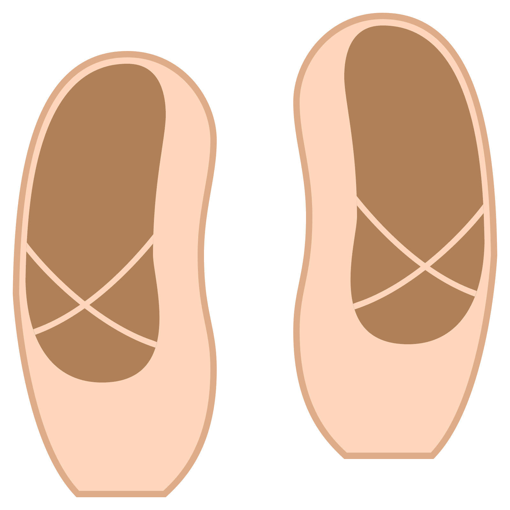

Hola, soy Juliana Andrea Ortega Castillo.
Tengo 23 años y soy estudiante de Ingeniería de Sistemas de la UFPS apasionada por la
programación tanto así que terminé en varias maratones de programación
dando buenos resultados y poniendo en alto el nombre de mi alma mater 
Soy bailarina  y profesora de ballet de unas niñas maravillosas en una excelente academia que busca esculpir nuevos talentos en la ciudad de Cúcuta.
Me encantan los gatitos  , son hermosos , ah, y el Rosa es mi color favorito.
, son hermosos , ah, y el Rosa es mi color favorito.